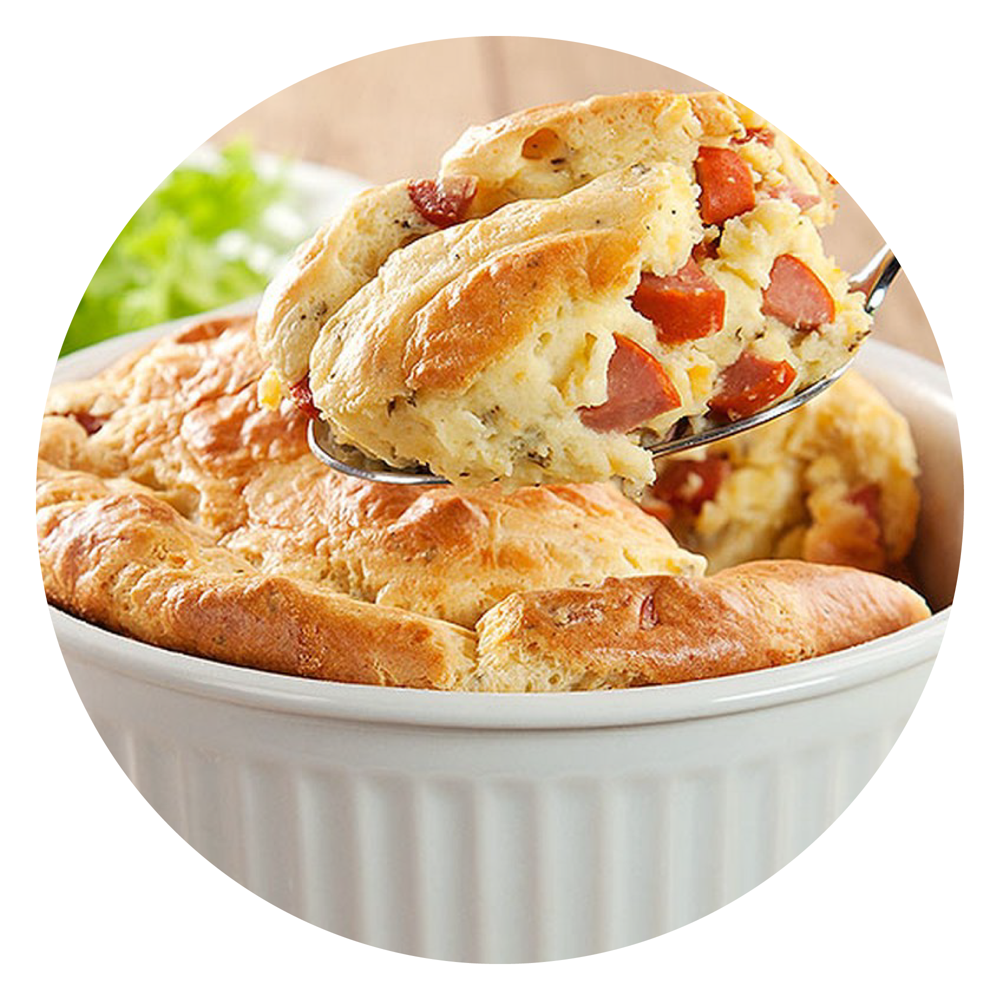

Receita:Individual de Sufflê
Esses suflês de queijo são simples de fazer -
são os suflês grandes que são mais complicados
porque é difícil julgar se eles estão
cozidos ou não ... (leia mais)Receita: Omelete Clássica
Prepare este clássico rápido e fácil,
que também é frequentemente usado como
teste de um verdadeiro chef.
Uma omelete francesa tradicional
enrolada não tem cor ... (leia mais)

